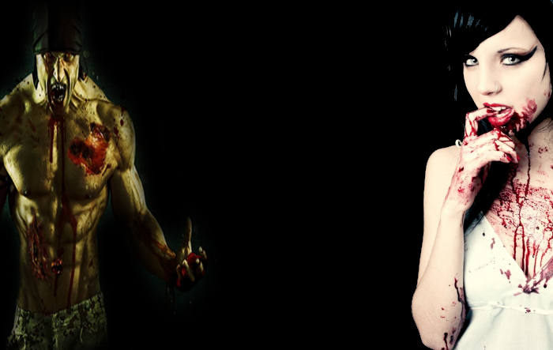

Gear. Not those round things in your Toyota's transmission. I'm talking about "Survival Gear." Things you may find useful if get hungry, cold, tired or...oh yeah, surrounded by an angry hoard of flesh eating senior citizens. Whatever the situation, being as prepared as possible is always a good thing. General survival gear should consist of necessities and protection.
Food
Zombies aren't the only ones who need to eat. The last thing you want is your stomach making that "dying whale" sound when you're trying hard not to be detected. Canned goods are always good to have. If you're lucky enough to come across some MRE's, take them. Other survivors will have the same thought on their mind: "Wal-Mart Neighborhood Market." If you live near a grocery store go ahead and take the chance, but be extra careful. If George Romero has taught us anything, it's that zombies are sneaky bastards... and if you happen to live next to a Twinkie factory, then God has truly smiled on you.
Tools
Tools will consist of many things. From a flint to a can opener to battery powered phallic objects. You can eat soup with your fingers if you have to, so to hell with utensils. Think about the tools you really need. Lighters=fire=cooked food, hammer and nails to barricade windows and doors (hammer also doubles as close range weapon). Swiss army knives and leather-mans are extremely useful tools. Maps and a compass, if you have some direction you wish to travel...and if you need a quick distraction for a hasty getaway, power on the wifey's "special friend" and toss it at a couple of mindless flesh sacks, that should buy you enough time to run like hell... or maybe I just needed somewhere it insert a penis joke...
Weapons
Ah yes, weapons. Just as important to survival as food, water and air. "Air?" you may say. "Thats a little extreme." Well, lets put things into perspective. Something that can spread as fast as, say, 100,000 people a day can spread around the world in a matter of weeks. The chances of a survivor encountering a zombie as opposed to not encountering one, is more likely than not. For the, "Dear God, don't let them hear me taking a sh!t," survivor, guns are bad! When the world dies down to Living Population: 1,000, Bad Guys: 6.5 billion, the sound of a gunshot can travel a lot farther than the sound of a baseball bat the Cerebral cortex! Now, I'm not saying that you should not have one. If needed, a firearm will take down more "dead-heads" in less time than Babe Ruth on crack! I'm just saying, use them only if needed. Remember: Bats, swords and the good old' fashioned "Rear Naked Choke" never run out of ammo.
Armor
I know what you're thinking, leather helmet, bracers, chain mail, KNIGHT! Well, settle down Prince Valiant. When choosing personal protection you have to be cautious. Sure, walking around "Zombieland" looking like the runner-up of a jousting competition sounds pretty bad ass, but just think, if you happen to be fighting off a reanimated "exotic dancer" for reasons other than not tipping, and your ultra shiny, super solid armor happens to break your skin, all Ms. Linda Living Dead has to do is inject some form of bodily secretion in your open wound. Now the next few days for you will be similar to a scene out of "Hostel." The only thing between you and the undead you could simply be an extra shirt and a leather scarf. As long as you don't exchange bodily fluids with Willamina Walker, you should be okay...might be a good time to invest in a full body condom.